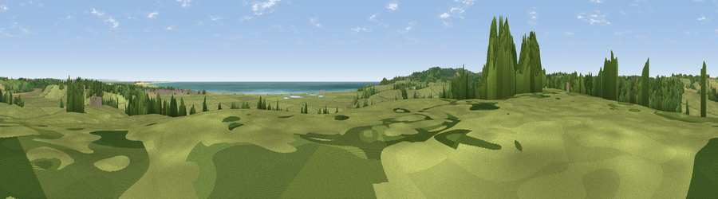

Viewpoint near Winchelsea
#13824 in England · top 11% of its area beats it · near WinchelseaThe view, rendered

A 360° render of this exact spot computed from the terrain model, tree cover and land cover — summer colours, afternoon light, calibrated against photographs of famous viewpoints. Real trees, hedges and buildings will differ in detail.
The panorama
Grey silhouette: terrain skyline in each direction (720 bearings, Earth curvature and refraction included). Dashed green: skyline with trees (+15 m) and buildings (+8 m) as obstacles. Blue strip: how far the ground is visible on each bearing.
Where the view opens
Wedge length = distance to the farthest visible ground on that bearing (vegetation-aware). Rings at 10, 25 and 50 km.
What fills the view
66% grassland · 17% woodland · 11% water · 4% cropland ·
Angular shares of the visible panorama (visual magnitude), not map area. Landscape diversity 0.45 (0–1 Shannon).
Key numbers
More beautiful places nearby
The staircase of upgrades: each row has a higher view potential than everything closer. Driving times are estimates from straight-line distance, calibrated against real road routing — check an actual route before setting out.
| Place | Direction | Drive | Score |
|---|---|---|---|
| Viewpoint near Udimore | N · 3 km | ~7 min | 59.7 |
| Viewpoint near Fairlight | SW · 5 km | ~11 min | 75.1 |
| Viewpoint near Fairlight | SSW · 5 km | ~12 min | 78.2 |
| Viewpoint near Fairlight | SW · 6 km | ~13 min | 79.0 |
| Viewpoint near Willingdon | WSW · 34 km | ~53 min | 81.5 |
| Viewpoint near Willingdon | WSW · 34 km | ~53 min | 83.4 |
| Wilmington Hill | WSW · 37 km | ~56 min | 85.4 |
| Viewpoint near Alciston | WSW · 42 km | ~61 min | 85.8 |
50.91352, 0.69257 · source: screening · position refined by local search. Computed location — check access rights before visiting.